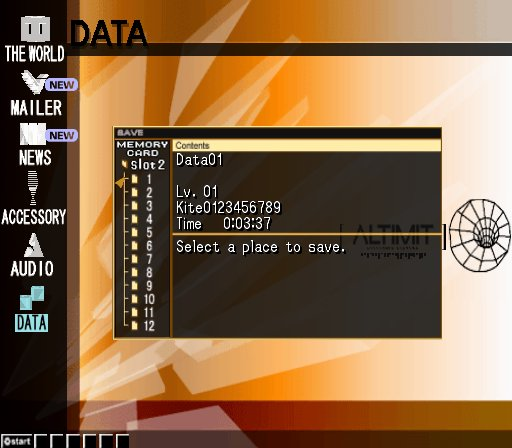

Let’s hacking! Saves 0001 and 0002.
New project: learn to reverse engineer file formats. Specimen: .hack//Infection.

I picked up a tool that extracts files from PS2 memory cards. Cheating? Maybe a little. I’ll worry about that later.
The first thing to do is start a new game for experimental purposes.

I’ve filled in names with the maximum possible length so that I can tell exactly much room is dedicated to them in the save file.
I’m forced to read some of the emails before saving, but then…

Three minutes, thirty-seven seconds. Saving in slot 1, before I’ve ever entered the game for the first time. Let’s see what that save file looks like.
00000000 4B 69 74 65 30 31 32 33 34 35 36 37 38 39 00 00 Kite0123456789..
00000010 00 00 00 00 00 00 00 00 48 61 63 6B 65 72 30 31 ........Hacker01
00000020 32 33 34 35 36 37 38 39 30 31 00 00 00 00 00 00 2345678901......
Well, there are the names I put in, right at the beginning. The character’s name is stored in 0x0000-0x000D, and the player’s name is stored in 0x0018-0x0029.
There’s not much else that we’ll be able to find from just one save, I guess, but we can take a stab at finding where the time is stored. Let’s just wait a few seconds, then make another save.

Great. Extract the save again and compare the two…
Offset(h) 00 01 02 03 04 05 06 07 08 09 0A 0B 0C 0D 0E 0F
00008400 F7 32 00 00 40 00 10 00 80 00 00 08 00 01 40 00 ÷2..@...€.....@.
vs.
Offset(h) 00 01 02 03 04 05 06 07 08 09 0A 0B 0C 0D 0E 0F
00008400 29 38 00 00 40 00 10 00 80 00 00 08 00 01 40 00 )8..@...€.....@.
Just two bytes differ. The PS2 is little-endian, so we should read those as 0x3829 and 0x32F7. They differ by 1330, in decimal. 1330? The time should differ by 22 seconds. Hmm. Divide by 22, and let’s see what we get: 60.454545…. I deduce that the time is stored with 1/60 of a second resolution.
They can’t be storing the time in two bytes—that’s only enough for about 18 minutes. Three bytes would be enough for about 77 hours, but I imagine they want to be able to track at least 99 hours, so I’ll go out on a limb and assume that they’re storing the time as an ordinary 32-bit integer. So, time is stored in 0x8400-0x8403.
Hacking session 1 complete, I figure. That’s 4 bytes for the time, 14 bytes for the character name, and 18 bytes for the user name. 36 bytes down, 34060 to go.